title: Git代码同步
date: 2020-01-07 10:51:37
[toc]
cd CQApp-api-mongodb/
git pull origin master
git add .
git commit -m "add api cardlist"
git push origin master
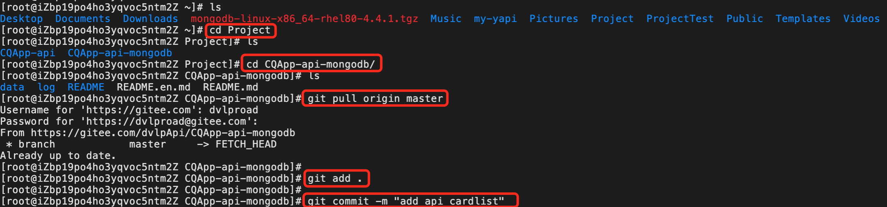
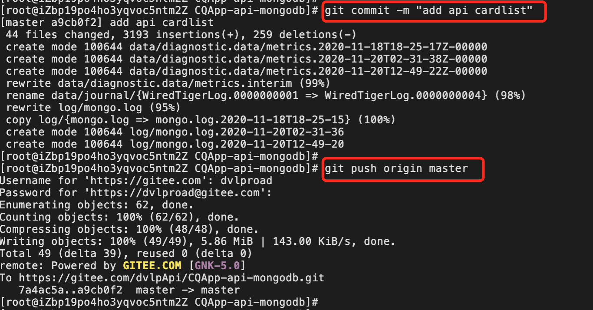
上传成功，我们通过网站或者sourcetree等查看效果
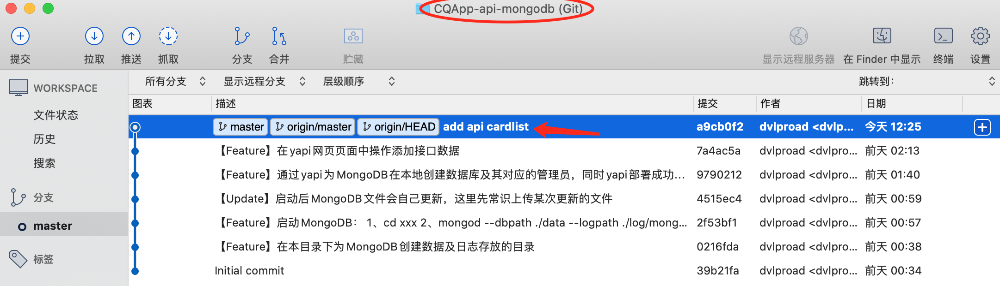
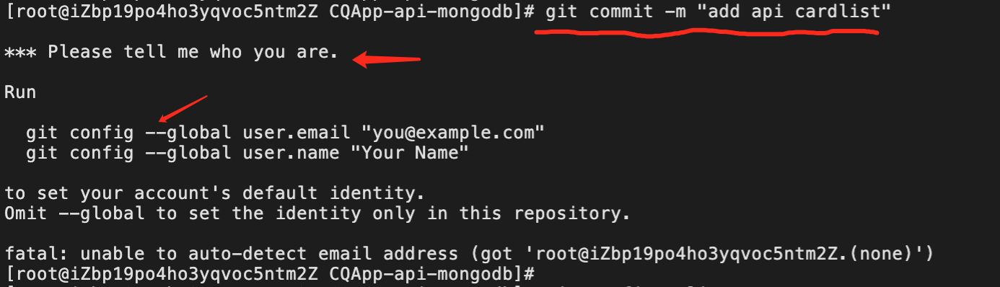
解决配置用户名和邮箱
1、全局配置：使用 --global 修饰后设置的全局的用户
git config --global user.name "Your Name"
git config --global user.email "email@example.com"
2、如果只想设置单个项目的用户：可cd到项目根目录下,执行如下命令:
git config user.name "Your Name"
git config user.email "email@example.com"
使用命令:git config –list 可查看当前用户信息以及其他的一些信息
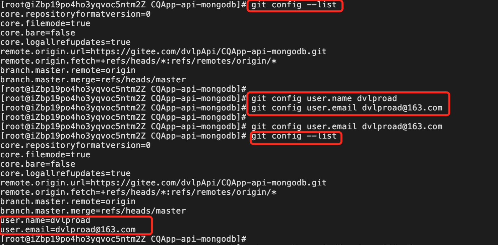
ssh-keygen -t rsa -C "ecs_aliyun"
cd /root/.ssh
cat id_rsa.pub
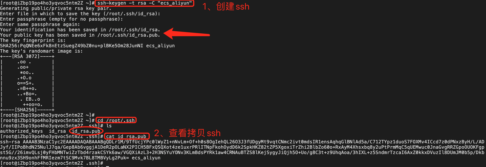
到 github/gitee/gitlab 上添加对应的ssh
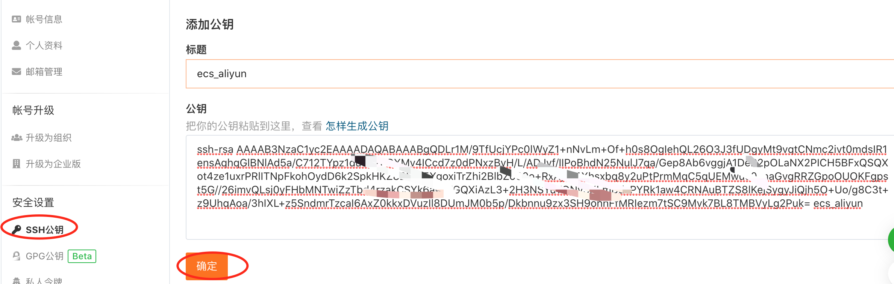
git pull
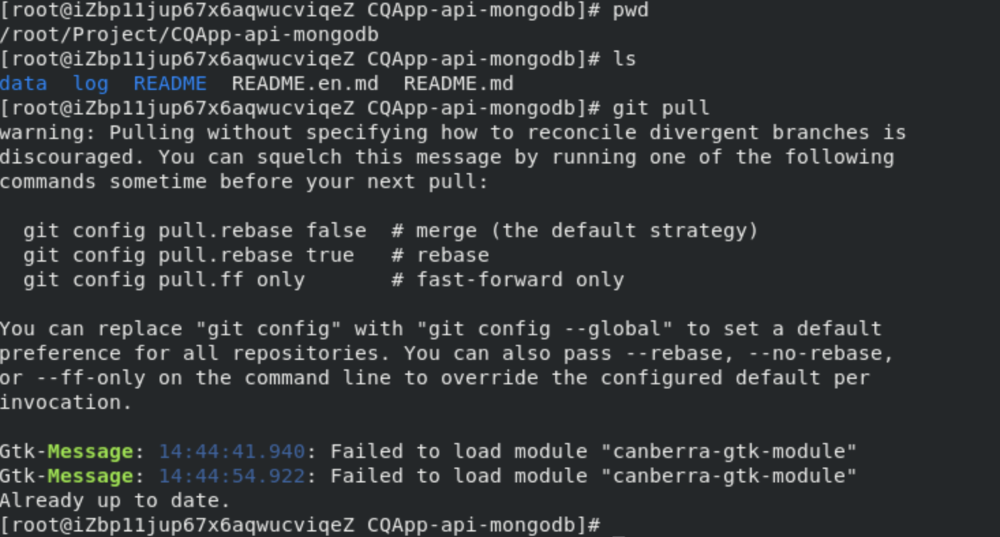
git status
git add .
git commit -m "我是提交的注释"
如果提交过程中出现如下问题：
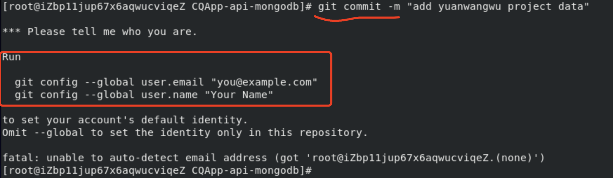
请先根据提示，设置全局邮件和用户名，以让其他开发者可以看到是谁提交。配置前和配置后，可使用
查看
git config -l
设置提交者的邮箱
git config --global user.email "dvlproad@163.com"
设置提交者的用户名
git config --global user.email "dvlproad"
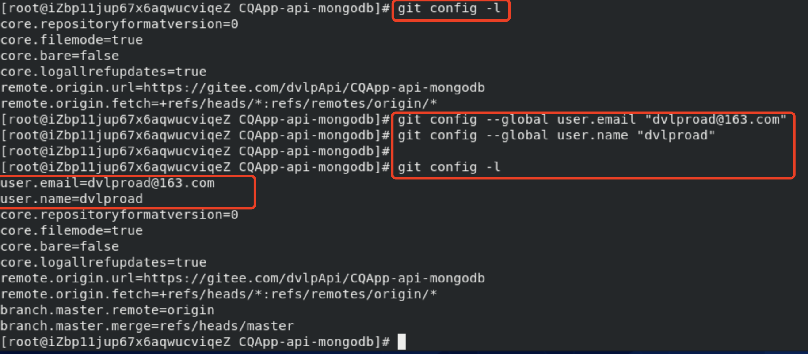
设置完后，重新执行
git commit -m "我是提交的注释"
即可。接下来就只剩最后一步，就可正式提交完成了。
git push origin master
更多 git push用法，查看官网https://www.runoob.com/git/git-push.html
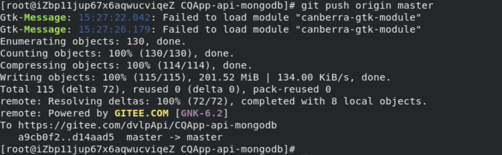
结果：
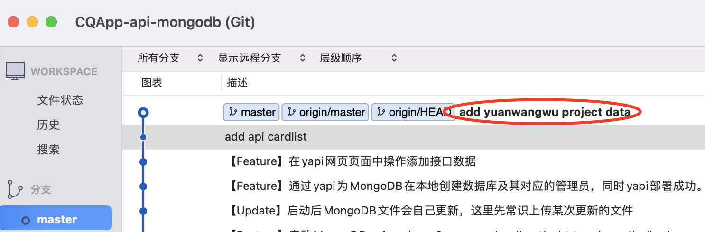